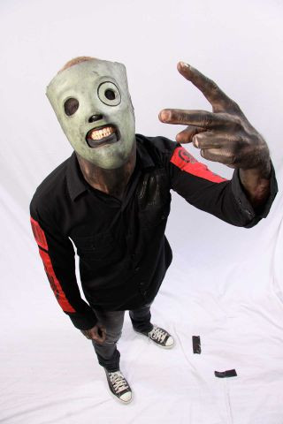
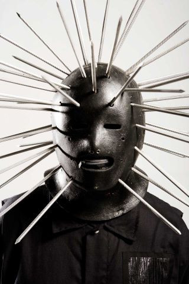

Имидж
Slipknot известны своим сценическим имиджем. Участники группы носят комбинезоны и уникальные маски, отражающие личность каждого из них. Маски и комбинезоны видоизменяются с выходом каждого нового альбома группы. Описание масок и комбинезонов вы можете увидеть, открыв ссылку на статьи в «Википедии» про участников группы. Участники носят маски, которые также отображают «внутренний мир» каждого из них. Также большинство из них имеют татуировки, которые так же набиты по порядку номеров.
Маски
«All Hope Is Gone» (2008)
|  |  |
 |
|  | ||
«.5 The Gray Chapter» (2014)
«We are not your kind» (2019)